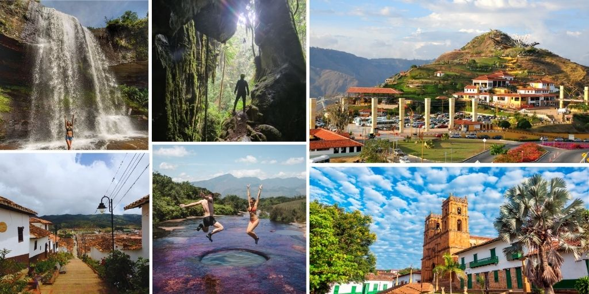

Somos apasionados por la aventura y la naturaleza de Santander. Nos dedicamos a conectar a viajeros de todo el mundo con las experiencias más memorables, seguras y extremas de nuestra región.

En Santander Aventura nos apasiona mostrar la riqueza natural y cultural de nuestra región, nos especializamos en diseñar experiencias únicas de turismo de aventura y ecoturismo, garantizando momentos inolvidables en un entorno seguro y respetuoso con la naturaleza.
- Guías Certificados: Contamos con un equipo de profesionales locales altamente capacitados y certificados en primeros auxilios y deportes de aventura.
- Seguridad Garantizada: Utilizamos equipos de alta calidad homologados internacionalmente y cumplimos con todos los protocolos de gestión de riesgo.
- Turismo Sostenible: Promovemos un impacto positivo en las comunidades locales y velamos por la conservación de los ecosistemas que visitamos.
- Comunidad: Trabajamos de la mano con campesinos y locales de la región para impulsar el desarrollo de la comunidad.
- Sostenibilidad: Cuidamos nuestros senderos y ríos a través de jornadas de limpieza y prácticas de 'no deje rastro.